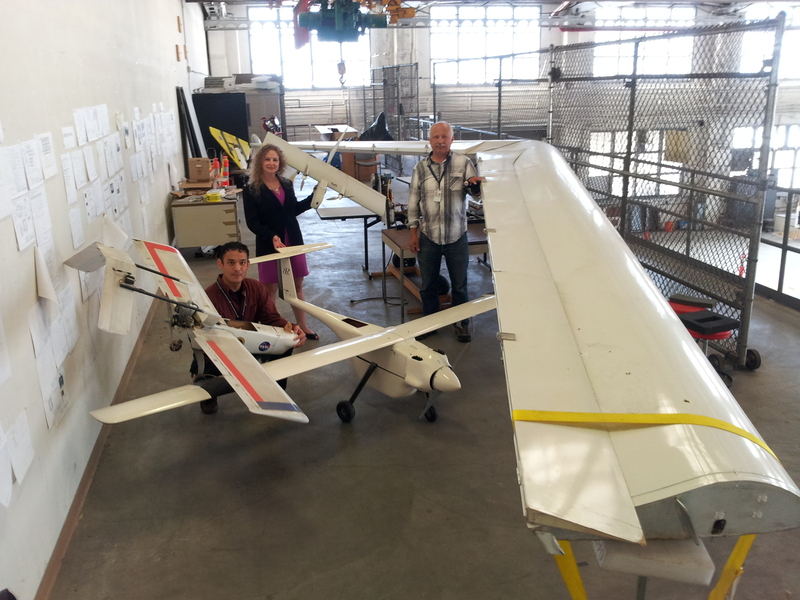

Intelligent Hardware-Enabled Sensor and Software Safety and Health Management for Autonomous UAS
A project funded by NARI via the ARMD Seedling Fund
|
Team Members
- PI: Kristin Y. Rozier, civil servant, NASA Ames Research Center, Moffett Field, CA 94035, USA
- Co-I: Johann Schumann, SGT, Inc., NASA Ames Research Center, Moffett Field, CA 94035, USA
- Co-I: Corey Ippolito, civil servant, NASA Ames Research Center, Moffett Field, CA 94035, USA

Abstract
Unmanned Aerial Systems (UAS) can only be deployed if
they can effectively complete their mission and respond to
failures and uncertain environmental conditions while maintaining
safety with respect to other aircraft as well as humans
and property on the ground. We are designing a real-time, onboard
system health management (SHM) capability to continuously
monitor essential system components such as sensors, software, and hardware systems for
detection and diagnosis of failures and violations of safety or
performance rules during the flight of a UAS. Our approach
to SHM is three-pronged, providing: (1) real-time monitoring
of sensor and software signals; (2) signal analysis, preprocessing,
and advanced on-the-fly temporal and Bayesian
probabilistic fault diagnosis; (3) an unobtrusive, lightweight,
read-only, low-power hardware realization using Field Programmable
Gate Arrays (FPGAs) in order to avoid overburdening limited
computing resources or costly re-certification of flight software
due to instrumentation. No currently available SHM capabilities (or combinations of currently existing SHM capabilities) come anywhere close to satisfying these three criteria yet NASA will require such intelligent, hardware-enabled sensor and software safety and health management for introducing autonomous UAS into the National Airspace System (NAS).
We are pursuing
a novel approach of creating modular building blocks for combining
responsive runtime monitoring of temporal logic system safety
requirements with model-based diagnosis and Bayesian
network-based probabilistic analysis. Our research program includes both developing this novel approach and demonstrating
its capabilities using the NASA Swift UAS as a demonstration platform.
Collaborators
- Johannes Geist, University of Applied Sciences Technikum Wien, Vienna, Austria
- Eddy Mazmanian, civil servant, NASA Ames Research Center, Moffett Field, CA 94035, USA
- Patrick Moosbrugger, University of Applied Sciences Technikum Wien, Vienna, Austria
|
|